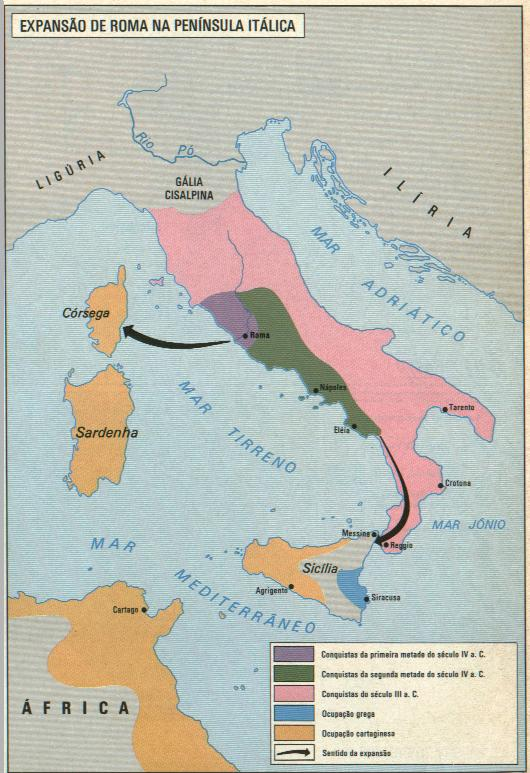
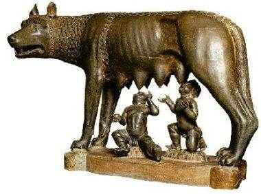
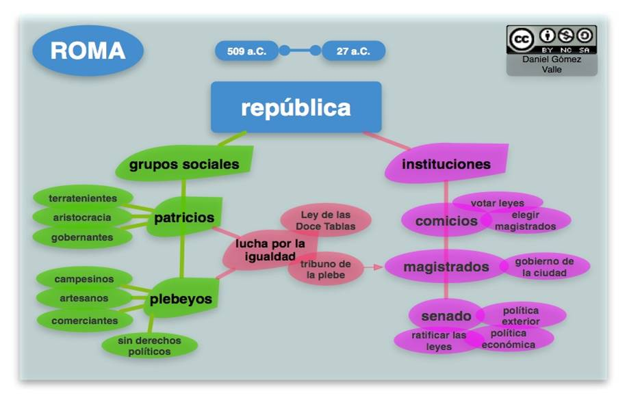
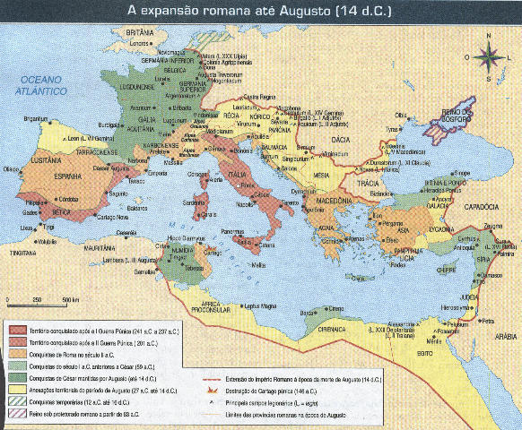
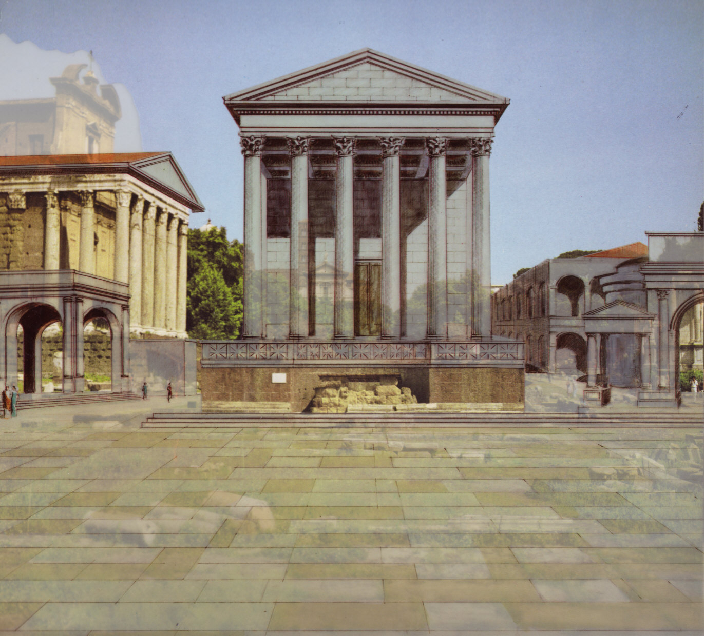
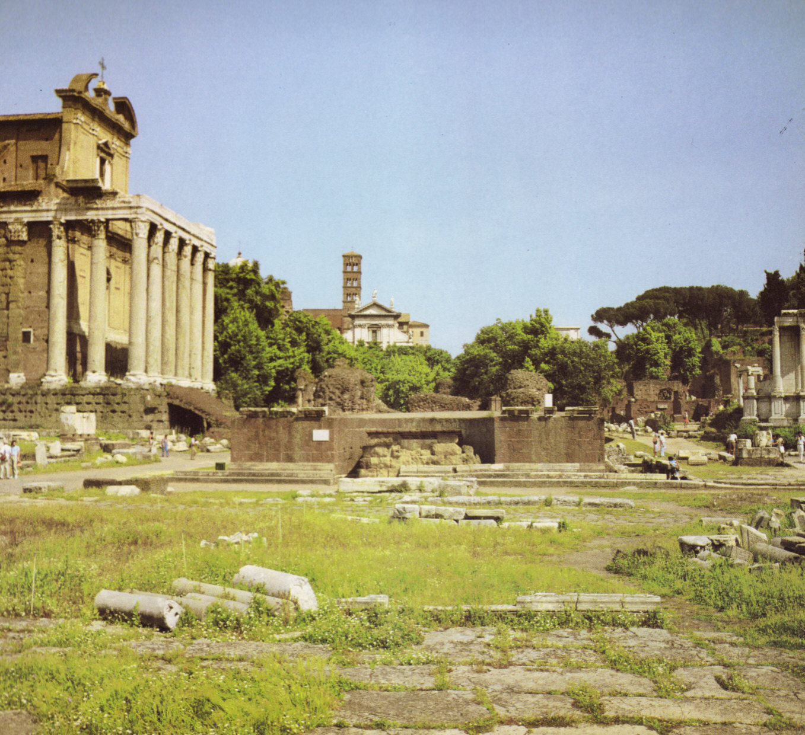
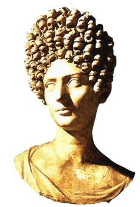
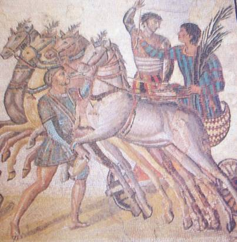

|
|
Roma Antiga
por Carolina de Souza Tuon
Caroline de Almeida Camargo
Monarquia e República Romana

Mapa antigo da Itália - Roma
O Império Romano dominou todos os povos que foram mostrados
até agora, desde a Europa, Egito e o Oriente Próximo. Roma é uma
cidade da península Itálica, ás margens do rio Tibre. A princípio,
era uma simples aldeia, depois se tornou cidade e expandiu seus
domínios por grande parte do mundo antigo. Com a expansão militar,
os romanos entraram em contato com outros povos e ampliaram sua
própria cultura, mesclando-a com influências dos povos conquistados.
Muitas instituições políticas e sociais contemporâneas têm suas
raízes na Roma antiga.

O principal idioma dos antigos romano era o latim, sendo
que nele encontramos a origem de muitos conceitos básicos da vida
política atual, sendo que diversas palavras são utilizadas até o dia
de hoje como Corpus Cristi "corpo de Cristo", República vem
de res = coisa e publicae = pública. Na origem,
República referia-se á organização do Estado voltada para o
interesse público e o bem comum.
Por
volta do século VII a.C., os etruscos começaram a conquistar a
região do Lácio, transformando a aldeia romana em uma cidade. Ao
adquirir características de cidade, teve inicio em Roma a Monarquia.
Durante a Monarquia, Roma foi governada por um rei,pelo Senado e
pela Assembléia Curial. O rei era chefe militar, religioso e juiz,
sendo fiscalizado pela Assembléia Curial e pelo Senado. O Senado era
um conselho formado por velhos cidadãos, responsáveis pela chefia
das grandes famílias. A Assembléia Curial compunha-se de cidadãos
que estavam agrupados em cúrias. Seus membros eram soldados com
funções de eleger altos funcionários e aprovar ou rejeitar
leis.
Os principais grupos sociais de Roma eram
patrícios, clientes, plebeus e escravos. Os patrícios eram os
cidadãos romanos e por isso desfrutavam de direitos políticos e
podiam desempenhar altas funções públicas, no exército, na religião,
na justiça ou na administração. Os clientes eram homens livres que
se associavam aos patrícios, prestando-lhes diversos serviços
pessoais em troca de auxílio econômico e proteção social. Os plebeus
eram homens livres que se dedicavam ao comércio, ao artesanato e aos
trabalhos agrícolas. Os escravos eram devedores incapazes de pagar
suas dívidas ou prisioneiros de guerra.
Durante o
domínio dos reis etruscos, muitas obras públicas foram realizadas,
mas, apesar desse avanço material, o crescimento desordenado de Roma
trouxe muitos problemas ao longo do tempo.

A Monarquia etrusca foi questionada pela aristocracia romana
(patrícios), que não desejava mais o reinado vitalício, pois queriam
controlar diretamente o poder em Roma, rebelaram – se contra o rei,
expulsando e estabelecendo uma nova organização política: a
República. Com a instalação da República, os patrícios foram
montando uma organização social e administrativa para exercer
domínio sobre Roma e melhor desfrutar os privilégios do poder. Eles
controlavam quase todos os altos cargos da República. Esses cargos
eram exercidos por dois cônsules e outros importantes magistrados.
Na chefia da República, os cônsules eram auxiliados pelo Senado,
composto de destacados cidadãos romanos. Havia, ainda, uma
Assembléia dos Cidadãos, que era controlada pelos ricos
patrícios.
A segurança de Roma dependia da existência de um exército
forte e numeroso, necessitando da participação de soldados plebeus.
Ao tomar consciência da importância de seu papel, os plebeus
recusaram-se a servir no exército, isso acabou gerando uma longa
luta política. Uma das exigências feitas pelos plebeus para voltar a
servir no exército foi a criação de um Comício da Plebe, também
conhecida como Assembléia da Plebe, presidido por um tribuno da
plebe. Em 470 a.C., os plebeus conseguiram que os patrícios
reconhecessem a autoridade dos tribunos da plebe. Outras conquistas
da plebe foram: a Lei das Doze Tábuas, que eram normas jurídicas,
que seriam escritas e aplicadas a patrícios e plebeus, além de que
esse código escrito serviu para dar clareza ás regras; a Lei da
Canuléia, que autorizava o casamento entre patrícios e plebeus e a
Eleição dos magistrados plebeus, onde os plebeus foram conseguindo
ter acesso ás mais diverso magistraturas romanas.
A
República Romana expandiu novamente seu território por meio de
várias conquistas militares. Mais tarde, tiveram início as Guerras
Púnicas, e, posteriormente, a expansão por diversas regiões do mundo
antigo. A principal causa das guerras de Roma contra Cartago foi à
disputa pelo controle comercial do mar Mediterrâneo, após batalhas
violentas, desgastantes com duras perdas, os romanos conseguiram
arrasar Cartago em 146 a.C. Eliminada a rival, Roma abriu caminho
para a dominação das regiões do Mediterrâneo Ocidental e Oriental. O
mar Mediterrâneo foi controlado pelos romanos, que o chamavam de
mare nostrum.

Roma utilizou
intensamente o trabalho escravo para a produção de bens e serviços.
Com a expansão militar, grande parte dos prisioneiros de guerra foi
transformada em escravos. O escravo realizava inúmeros trabalhos nos
mais diversos setores da economia. Assim, o senhor de escravos
ficava com o tempo livre para as atividades administrativas, a
diversão e o ócio. Inconformados com a exploração a que eram
submetidos, os escravos organizaram, durante a República, várias
revoltas. Entre 73 e 71 a.C., quase 80 mil escravos, sob a liderança
de Espártaco, organizaram um forte exército, que ameaçou o poder de
Roma durante quase dois anos. Só em 71 a.C. uma força do exército
romano, sob o comando de Licínio Crasso, conseguiu vencer o exército
de escravos liderados por Espártaco.
As conquistas
militares concentraram em Roma a riqueza retirada dos países
dominados. Entre os chefes militares abandonou-se o ideal do
“soldado camponês”, crescendo o interesse pela profissionalização da
atividade militar e pelo desfrute da vida urbana. A elevação do
padrão de vida e do estilo de vida romana podia ser constatada na
construção das casas, nas roupas e na alimentação das classes
dominantes. Mas o luxo e a riqueza eram privilégios de uma minoria
de patrícios e de plebeus ricos.

Serventes ocupado com
tarefas domésticas.
O crescente aumento do
número de plebeus pobres e miseráveis tornou cada vez mais tenso a
situação social e política. Diante desse clima, os irmãos Tibério e
Caio Graco, que eram tribunos da plebe, tentaram promover uma
reforma social com o objetivo de melhorar as condições de vida da
população plebéia. Tibério Graco propôs a lei agrária que previa
limitações ao crescimento dos latifúndios e distribuição de terras
entre os plebeus, mas o Senado e os nobres mandaram assassinar
Tibério. Dez anos depois, Caio Graco tentou fazer reformas que
beneficiariam os pobres, retomando, inclusive, o projeto proposto
pelo irmão, mas como sabia que estavam tramando assassina-lo, Caio
mandou que um escravo o matasse.
Fracassadas as reformas
sociais dos irmãos Graco, a situação política, econômica e social da
República romana entrou num período de grande instabilidade. A
passagem da República para o Império foi marcada por um clima de
desordem pública e tensão popular em Roma. Os senadores foram
perdendo o controle do poder e os mais destacados chefes militares
ocuparam a liderança da vida política. Entre os líderes militares mais
influentes desse período, podemos destacar Júlio César.
Caio Júlio
César assumiu quase todos os poderes existentes em Roma.
Durante seu governo, promoveu - se uma
reorganização político-administrativa em Roma. Tão grandes eram
os poderes de César, que a aristocracia republicana temia a completa
extinção das instituições da República. Acusando-o de pretender
proclamar-se rei, um grupo de senadores, liderados por Bruto e
Cássio, assassinou César, em 15 de março de 44 a.C.

Ontem Hoje
Templo de
Júlio César
Após o
assassinato de Júlio César, o poder em Roma foi entregue a um
triunvirato composto por Marco Antônio, Otávio e Lépido. Sucedeu-se
uma série de lutas políticas entre esses líderes, da qual Otávio
saiu vitorioso. A partir de 27 a. C., Otávio foi
acumulando poderes e títulos, entre eles o de augusto e o de
imperador. Durante o longo governo de Otávio Augusto, realizou-se
uma série de reformas administrativas. O exército romano foi
profissionalizado e o Império passou a desfrutar um período de paz,
conhecido com Pax Romana. No meio rural, por exemplo, concederam
liberdade para alguns escravos, transformando - os em colonos
ligados á terra do senhor e com uma série de obrigações a cumprir.
Assim, o número de libertos aumentou durante o
Império.
Durante os dois
primeiros séculos do Império, a atividade comercial desenvolveu-se
intensamente, impulsionada por fatores como: a existência de uma
moeda comum válida nas diversas regiões; a generalização do Direito
romano e a construção de estradas ligando os diversos pontos do
Império. A partir do século II, ele entrou num longo período de
crise. Pois para sustentar a estrutura administrativa e militar, era
preciso fazer gastos enormes, e para isso, era cobrada uma série de
tributos da população, e essa carga tributária ficava cada vez mais
pesada. A crise agravou-se quando os romanos tiveram de enfrentar a
pressão militar dos bárbaros em suas fronteiras. Essa crise afetava,
sobretudo, a parte ocidental do Império. Percebendo isso, em 330 o
imperador Constantino decidiu mudar a capital do Império para a
parte Oriental, fundando assim Constantinopla.
Em 395, com a
morte do imperador Teodósio, o Império foi dividido entre seus dois
filhos. Um deles, Honório, recebeu o Império Romano do Ocidente e o
outro, Arcádio, recebeu o Império Romano do Oriente, com a
finalidade de melhorar a administração de cada parte do Império.
Nessa fase, os romanos estavam enfraquecidos pelas divisões
internas, pela indisciplina no exército e pele miséria das
populações.
Roma foi uma
das maiores cidades do mundo antigo. No século II, sua população, de
cerca de 1200000 habitantes, era formada por gregos, egípcios,
gauleses. Para manter sob controle essa grande população,
constituída por muitas pessoas sem ocupação, que viviam pelas ruas,
as autoridades romanas distribuíam periodicamente alimentos (pão) e
promoviam diversos espetáculos públicos (circo). Assim, “pão e
circo” foi a fórmula utilizada para diminuir as tensões sociais.
Entre os espetáculos mais populares de Roma estavam as lutas contra
animais ferozes e os combates entre gladiadores que eram,
normalmente, escravos ou prisioneiros de guerra treinados em escolas
especiais de luta. Eles eram obrigados a lutar ferozmente até que o
adversário caísse morto ou ferido. Um dos anfiteatros mais
utilizados nesses espetáculos foi o Coliseu, que tinha capacidade
para abrigar quase 90 mil espectadores.

Coliseu
hoje

Coliseu ontem
A arte romana não buscava o belo
em si, pois o que predominavam eram os aspectos técnicos, práticos e
utilitários. Os romanos produziram uma arquitetura grandiosa e
imponente, que se manifestaram na construção dos mais variados
edifícios. Nessas construções, destacavam-se os arcos, as abóbadas e
as cúpulas por seu aspecto monumental. A escultura romana
destacou-se pela produção de alguns gêneros característicos como:
estátuas de retratos (cabeça e busto), estátuas eqüestres e relevos
históricos, sendo que muitos escultores romanos preocupavam-se em
representar a realidade.

Detalhe
do friso coluna de Trajano primeiro imperador romano
nascido fora Itália, em Itálica na Espanha, atual
Sevilha.
Friso espiral contínuo de 198 m, mostra armas,
armaduras, fortificações e cenas de batalhas das duas campanhas do
imperador para conquista da Dácia.
A
língua latina constitui uma das mais importantes permanências
culturais da Roma antiga entre os povos ocidentais. Foram da língua
latina que se originaram os idiomas italiano, português, espanhol,
francês e romeno.
Os romanos se divertiam a partir dos
circos, onde assistiam acrobacias realizadas por ginastas e
equilibristas, havia
também corridas de cavalos atrelados a carruagens. No Circo Máximo
de Roma, aproximadamente 50 mil pessoas podiam assistir a essas
corridas e fazer apostas, nos teatros
onde assistiam peças dos mais variados gêneros e nos termas que eram
estabelecimentos de banho. Havia ainda lugares reservados para
atividades intelectuais como bibliotecas, salas de conversação e
salas de concertos musicais. A religião romana era politeísta, sendo
que havia duas espécies de cultos: o culto privado, celebrado pelo
chefe da família, e o culto público, celebrado pelos sacerdotes
romanos, com a supervisão dos magistrados. O chefe geral da religião
romana era o sumo pontífice. No
período imperial, passou-se a venerar a figura do imperador, que
depois da morte ocupava lugar entre os deuses
tradicionais.
Segundo a tradição cristã, foi durante
o reinado do imperador Augusto que Jesus Cristo nasceu, em Belém, na
Galiléia. Depois da morte de Jesus, o cristianismo foi difundido aos
poucos pelo Império Romano por meio da pregação de seus discípulos.
Encontrou de início, maior repercussão entre os pobres e os
escravos, que se convertiam acreditando na salvação
eterna.
O cristianismo opunha-se á religião do
Império Romano. Os cristãos não aceitavam, por exemplo, o culto aos
deuses tradicionais greco-romanos. Negavam-se também a adorar a
pessoa do imperador. Além disso, os cristãos recusavam-se muitas
vezes a servir no exército. Por isso, passaram a ser perseguidos
pelos imperadores romanos. Durante essa fase de perseguição, muitos
cristãos foram aprisionados e lançados numa arena para enfrentar
leões e outras feras. Apesar das dificuldades, o cristianismo foi
propagado cada vez mais, conquistando novos adeptos. Em 313, o
imperador Constantino I, que se convertera ao cristianismo, liberou
o culto cristão em todos os domínios do Império Romano por meio do
Edito de Milão. Em 381 d.C., o cristianismo passou a ser considerado
a religião do Estado, quando o imperador Teodósio foi batizado
cristão. Cerca de uma década depois, os cultos pagão foram proibidos
e o cristianismo tornou-se, efetivamente, religião oficial do
Império.
Roupas
e Penteados
  
Penteado
feminino Caracala Júlio
Cesar
Os trajes romanos
eram simples, e sua peça básica era a túnica que podia chegar até a
panturrilha, e era complementada pela toga uma espécie de um manto
branco de lã que cobria o corpo deixando o braço direito
livre, que até os 16 anos os jovens usavam a toga pretexta, e a
partir dos 16 trocavam em uns, cerimônia pela toga virilis.
As
mulheres usavam sobre a túnica a stolla que era uma peça de mangas
curta, presa com uma cinto, e ao sair de casa usavam um manto
chamado palla.O calçado para ambos os sexos era o calcei.Os
penteados eram apenas femininos e variou conforme as épocas. Eram
indispensáveis os pentes, que eram feito de bronze, osso ou marfim.
Os eram marcados pelo calamistrum, uma espécie de ferro côncavo, que
era aquecido na brasa, e também era indispensável o espelho
feito de bronze, prata ou cristal soprado, também era muito
usado detalhes como prendedores, laços, redes, perucas que
aumentavam o volume e a consistência dos penteados.
No período imperial, passou-se a
venerar a figura do imperador, que depois da morte ocupava lugar
entre os deuses tradicionais.
Segundo a tradição cristã, foi durante
o reinado do imperador Augusto que Jesus Cristo nasceu, em Belém, na
Galiléia. Depois da morte de Jesus, o cristianismo foi difundido aos
poucos pelo Império Romano por meio da pregação de seus discípulos.
Encontrou de início, maior repercussão entre os pobres e os
escravos, que se convertiam acreditando na salvação
eterna.
O cristianismo opunha-se á religião do
Império Romano. Os cristãos não aceitavam, por exemplo, o culto aos
deuses tradicionais greco-romanos. Negavam-se também a adorar a
pessoa do imperador. Além disso, os cristãos recusavam-se muitas
vezes a servir no exército. Por isso, passaram a ser perseguidos
pelos imperadores romanos. Durante essa fase de perseguição, muitos
cristãos foram aprisionados e lançados numa arena para enfrentar
leões e outras feras. Apesar das dificuldades, o cristianismo foi
propagado cada vez mais, conquistando novos adeptos. Em 313, o
imperador Constantino I, que se convertera ao cristianismo, liberou
o culto cristão em todos os domínios do Império Romano por meio do
Edito de Milão. Em 381 d.C., o cristianismo passou a ser considerado
a religião do Estado, quando o imperador Teodósio foi batizado
cristão. Cerca de uma década depois, os cultos pagão foram proibidos
e o cristianismo tornou-se, efetivamente, religião oficial do
Império.
LINHA
DO TEMPO
•753 a.C.:Diz a lenda que a cidade foi fundada por Rómulo e Remo,
filhos de Réia Sílvia, rainha da cidade de Alba Longa, com o deus
Marte. Usando um arado, ele desenhou os limites de Roma. No começo,
a cidade era governada por um rei.
•509 a.C.: A cidade se
dividia entre os patrícios, que tomavam todas as decisões, e os
plebeus, que não tinham direitos civis. Quando o rei Tarquínio o
soberbo, último rei de origem etrusca) tentou distribuir o poder,
foi deposto e a monarquia acabou. Povos itálicos, como os etruscos,
começam a entrar em declínio.
•471 a.C.: Criação do cargo de
Tribuno da Plebe.
•367 a.C.: Lex Licinia Sextia - Os plebeus
conseguem acesso ao cargo de cônsul.
•326 a.C.:Surgiram as
primeiras grandes obras: o Circo Máximo; o primeiro aqueduto, que
distribuía água para todas as casas, e a Via Ápia, uma grande
estrada que permitia a movimentação de tropas.
•275 a.C.:Começou
o período de conquista. Roma dominou as cidades gregas do sul da
Península Itálica, dominando-a por inteiro.
•218 a.C.:O maior
inimigo de Roma, a cidade de Cartago, do norte da África, invadiu a
península Itálica. O comandante Aníbal venceu três grandes batalhas.
•149 a.C.:Depois de ocupar a Península Ibérica e derrotar
Aníbal, Roma destruiu Cartago. A cidade ficou em ruínas. No mesmo
ano, as tropas romanas conquistaram a Grécia. Em 133 a.C., assumiu o
controle total do mar Mediterrâneo.
•104 a.C.: Consulado de Caio
Mário.
•81 a.C.: Ditadura de Sila
•73 a.C.: O gladiador
Espártaco liderou uma rebelião de escravos, que construíram uma vila
aos pés do monte Vesúvio. Ele venceu o exército romano sete vezes,
antes de ser derrotado.
•63 a.C.: Roma passou a controlar
Jerusalém, ao anexar a Palestina, conhecida a partir de então como a
província da Judéia.
•59 a.C.:Dois generais inimigos Júlio César
e Pompeu se uniram ao rico comerciante Marcus Licinius Crassus e
passaram a chefiar o governo - Primeiro Triunvirato.
•49
a.C.:Quando Crassus morreu, os dois generais entraram em guerra.
César venceu e se declarou ditador.
•47 a.C.: César invadiu o
Egipto e proclamou Cleópatra como rainha.
•43 a.C.: Segundo
Triunvirato
•45 a.C.:O ditador contratou o astrônomo egípcio
Sosígenes para criar um novo calendário de 12 meses.
•44 a.C.:
César foi assassinado por um complô do senado, liderado por seu
sobrinho e filho adotivo Bruto. Ao descobrir a conspiração, ele
teria dito ao traidor a famosa frase: "Até tu, Bruto, meu filho?"
•31 a.C.: Eleito seu sucessor, Octávio lutou contra os generais
romanos para assumir o poder. Em 27 a.C., ele ganhou o título de
Augustus e determina que os imperadores devem se chamar César. Nos
41 anos de seu reinado, Octávio acabou com um século de conflitos e
iniciou um período de 200 anos de paz e prosperidade, a chamada Pax
Romana.
•30 a.C.: Derrotada em seu complô ao lado de Marco
Antônio para derrotar Octávio. Cleópatra cometeu suicídio e o Egipto
foi anexado ao Império Romano.
•27 a.C.: Otaviano recebe o
título de Augusto - início do Império Romano
•Entre 8 a.C.-4
a.C.: Jesus nasceu em Belém, na Judéia. Nesta época, o império tinha
cinco milhões de habitantes.
Depois de Cristo:
•33: Morre
Jesus Cristo em Jerusalém, crucificado;
•37: Com a morte do
Imperador Tibério, assumiu em seu lugar Calígula. Ele nomeou seu
cavalo Incitatus senador do império e mandou esculpir sua própria
cabeça em todas as estátuas de deuses de Roma. Foi assassinado 4
anos depois.
•64: Incêndio de Roma. Uma das versões sobre as
causas do incêndio aponta o próprio imperador Nero, que culpou os
cristãos.
•70: O imperador Tito destruiu Jerusalém. Os judeus
fugiram e se espalharam para a Armênia, o Iraque, o Irã, o Egito, a
Itália, a Grécia e a península Ibérica. O segundo templo foi
destruído.
•79: O vulcão Vesúvio entrou em erupção e soterrou as
cidades de Pompéia e Herculano na época do reinado de Tito.
•117: Sob o governo de Trajano, Roma conquistou a Britânia e
alcançou seu maior tamanho, englobando o sul da Europa, o
Mediterrâneo, o Egito, o Norte da África, a Gália, parte da
Germânia, Mesopotâmia e atuais Bulgária, Romênia, Grécia e Turquia.
Ver província romana.
•126: Sob o governo de Adriano foi
concluída a muralha, entre a Britânia e o território dos pictos, um
pouco ao sul da atual fronteira entre Inglaterra e Escócia.
•193-285: Crise do século terceiro.
•212: O imperador
Caracala fez a Constitutio Antoniniana (também conhecida como Édito
de Caracalla, ou Édito de 212), na qual concedia a cidadania romana
a todos os habitantes livres do império.
•303:Com o número de
cristãos atingindo 15 milhões dos 60 milhões de habitantes de
império: 25% da população escrava, plebeia e até parte da elite
sobretudo em Roma, partes da África e da Ásia, Diocleciano promoveu
uma nova grande perseguição (último imperador pagão).
•313: O
imperador Constantino, primeiro imperador Cristão, acabou com a
perseguição aos cristãos e declarou que o império não tem mais uma
religião oficial.
•330: O imperador Constantino reconstruiu a
cidade grega de Bizâncio (atual Istambul), e a denominou "Nova
Roma". Porém a cidade passou a ser conhecida como Constantinopla.
•337: Depois da morte de Constantino, seus filhos dividiram o
império em três partes.
•452: Liderado por Átila, os hunos
invadiram a Península Itálica, mas não chegaram a Roma.
•455: Os
vândalos, germanos que migraram para o sul, instalados no norte da
África (actuais Líbia, Marrocos e Tunísia), saquearam Roma.
•476: Odoacro, líder dos bárbaros germânicos Hérulos derrubou
Rômulo Augusto, o último imperador romano, então com 15 anos de
idade. Os historiadores em geral consideram este evento como o fim
do Império Romano do Ocidente e o início da Idade Média. O Império
Romano do Oriente, com capital em Constantinopla, ainda duraria
quase mil anos, até 1453.
•846: No auge da decadência, a cidade
de Roma ficou com apenas 30 mil habitantes. Hoje tem 2,5 milhões de
pessoas.
•1453: Os turcos otomanos (povos de origem nómade da
Ásia Central) invadiram Constantinopla (actual Istambul) e
derrubaram o Império Romano do Oriente ou Império Bizantino.

Os aurigas desfrutavam de grande popularidade e em geral
acumulavam grandes fortunas. Também os cavalos eram alvo de
fanatismo extremo, e seus admiradores davam a eles nomes que
destacavam suas qualidades, como Victor ou Adorandus,
ou engraçados, como Piripinus.
|